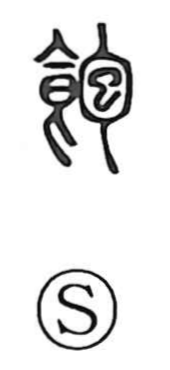

飽

Uncategorized
Kun: akiru, akasu, aku | On: hou
to be sated ・ to grow tired of ・ satiation
Explanation
A phono-semantic character with 包 as its phonetic. 包 originally depicts a human embryo enclosed in the womb, evoking the image of a rounded, swollen belly. 飽 applies this image to the post-meal fullness of the stomach—the swelling that signals contentment—so it comes to mean being filled and sufficient, and by extension being sated and even growing tired of something once one’s fill has been reached.